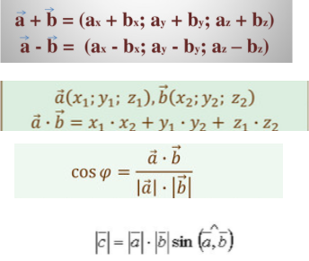

Передбачено вибір способу створення масиву: введення з клавіатури або заповнення масиву псевдовипадковими числами. Виводить максимальне та мінімальне значення серед елементів із парними та непарними індексами.
Сортування змішуванням (англ. Cocktail sort) — один із різновидів алгоритму сортування бульбашкою. Відрізняється від сортування бульбашкою тим, що сортування відбувається в обох напрямках, міняючи напрямок при кожному проході. Є більш ефективним. Рекурсивний лінійний пошук такий самий як і звичайний, але з використанням рекурсії.
У виконанні цієї програми були використані формули дій з векторами.

Літературні джерела: